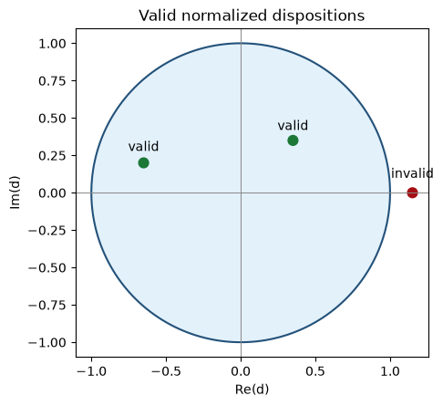

A weather forecast can say that rain has a 40% chance. A normal program can store 0.40.
This is one way to represent uncertainty: store a probability as a number.
Lana can store uncertainty as a value and apply rules to it.
Short answer: Yes. Lana can represent, combine, measure, transform, and sample uncertainty. Each action has a defined limit.
This article explains the uncertainty model in Lana 1.0. The examples use small Python calculations to make the rules visible. The Python code models the rules; it does not replace the Lana runtime.
1. A small Lana example
state weather = state(p: 0.40, d: 0.20);
state forecast = state(p: 0.70, d: -0.10);
let combined = append(weather, forecast);
let probability = measure combined as probability;
let sample = sample(combined);
The two states describe uncertain events. append combines them under an independence assumption. measure asks for the expected computational-basis probability. sample returns one concrete state from the resulting distribution. The original distribution does not change.
2. The STATE value
Lana represents one concrete state with a two-by-two complex matrix:
\[
\rho = \begin{pmatrix} 1-p & c \\ c^* & p \end{pmatrix}.
\]
p is the observable probability of outcome 1 in the computational basis. c is an internal complex parameter. A state is valid when:
\[
0 \leq p \leq 1, \qquad |c|^2 \leq p(1-p).
\]
For values between 0 and 1, Lana can store the normalized disposition d = c / sqrt(p(1-p)). This gives |d| <= 1. At p = 0 or p = 1, Lana sets d to zero by convention.
The model is abstract. Lana 1.0 does not claim that every STATE is a physical quantum state.
import numpy as npimport matplotlib.pyplot as plt# The unit disk is the valid region for normalized disposition d.theta = np.linspace(0, 2* np.pi, 400)fig, ax = plt.subplots(figsize=(5, 5))ax.plot(np.cos(theta), np.sin(theta), color="#24527a")ax.fill(np.cos(theta), np.sin(theta), color="#dceefb", alpha=0.8)ax.scatter([0.35, -0.65, 1.15], [0.35, 0.20, 0.0], c=["#1b7837", "#1b7837", "#a50f15"], s=60)ax.axhline(0, color="#888", linewidth=0.7)ax.axvline(0, color="#888", linewidth=0.7)ax.set(title="Valid normalized dispositions", xlabel="Re(d)", ylabel="Im(d)", aspect="equal")ax.text(0.35, 0.42, "valid", ha="center")ax.text(-0.65, 0.28, "valid", ha="center")ax.text(1.15, 0.10, "invalid", ha="center")plt.show()

3. What measurement reads
Computational-basis measurement reads p:
\[
P(1)=p, \qquad P(0)=1-p.
\]
The internal value c does not affect this measurement. This is why two states with the same p have the same computational-basis distribution.
Named bases can also read c:
Basis
Probability of the first outcome
Computational
p
x
1/2 + Re(c)
y
1/2 - Im(c)
Measurement is read-only. It does not replace or collapse the state. The statement about the diagonal applies to the computational basis, not to every named basis.
p =0.40d =0.20+0.10jc = d * np.sqrt(p * (1- p))basis_probabilities = {"computational": p,"x": 0.5- c.real,"y": 0.5+ c.imag,}assertall(0<= value <=1for value in basis_probabilities.values())basis_probabilities
A valid transform maps every valid STATE to another valid STATE. Lana 1.0 requires the transform to be deterministic, measurable, and validity-preserving.
Valid transforms can be composed. Composition is associative and has an identity transform. A transform does not need to be reversible.
Lana 1.0 includes two registered transforms:
INVERT maps (p, d) to (1-p, conjugate(d)).
NEUTRALIZE maps (p, d) to (p, 0).
These are abstract state operations. They are not claims about physical quantum operations.
5. Combining uncertainty with APPEND
APPEND combines two states as independent binary events. This independence is an assumption made for that operation. Lana does not discover it from the data.
When sigma_C is positive, Lana samples d_C from a circular normal density truncated to the unit disk and then builds c_C = d_C sqrt(p_C(1-p_C)). When sigma_C is zero, d_C is exactly m_C. When p_C is 0 or 1, d_C is zero.
The observable probability is commutative and associative. The internal distribution is kept as a binary tree, so grouping can change the internal result.
A normal STATE can be embedded as a distribution with probability one. Lana can then apply supported operations to STATE_DIST values.
A transform acts on each possible state. This creates a pushforward distribution. A lifted APPEND independently draws one state from each input distribution, then applies the ordinary APPEND rule.
For computational-basis measurement of a distribution mu, the exact probability is the average of the concrete-state probabilities:
\[
P(1)=\int p(\rho)\,d\mu(\rho).
\]
The grouping of a nested APPEND expression is meaningful for the internal distribution. Lana must not silently rewrite APPEND(APPEND(A, B), C) as APPEND(A, APPEND(B, C)).
7. Exact values, distributions, and samples
These four ideas are different:
An exact probability is a mathematical result, such as 0.82.
A STATE_DIST is a distribution over concrete states.
A sample is one concrete state selected from that distribution.
A Monte Carlo estimate averages repeated samples and is approximate.
sample(dist) returns one concrete state. The program can bind that state and use it later. Sampling does not mutate dist.
For basis-aware probability and distribution measurement of a STATE_DIST, Lana 1.0 uses the explicit estimate_measure operation. It reports the sample average. More samples generally reduce error, but the operation does not return a confidence interval.
APPEND uses an explicit independence assumption. It does not infer correlations.
STATE is abstract. It does not automatically mean a physical quantum system.
Unsupported type combinations and unsupported exact operations return errors.
Floating-point tolerance handles machine precision. It does not extend the mathematical domain.
Lazy distributions defer evaluation. They do not enumerate every possible state.
This is the important safety property: Lana does not silently turn an unknown result into a definite result.
# Check the two mathematical conditions that define a valid state.def valid_state(p, c):return0<= p <=1andabs(c) **2<= p * (1- p)assert valid_state(0.4, 0.2)assertnot valid_state(0.4, 0.6)assert append_probability(0.0, 0.0) ==0.0assert append_probability(1.0, 0.0) ==1.0print("Boundary checks passed.")
Boundary checks passed.
9. The answer
Uncertainty is programmable when a program can represent it, preserve it, combine it, and report what it does not know.
Lana 1.0 does this for a small, explicit state model. It defines values, operations, validation rules, and failure behavior. Its strength is not that it removes uncertainty. Its strength is that it prevents the program from hiding uncertainty.